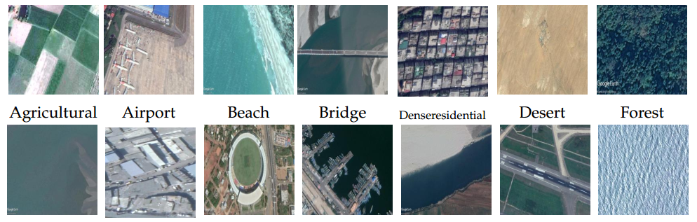
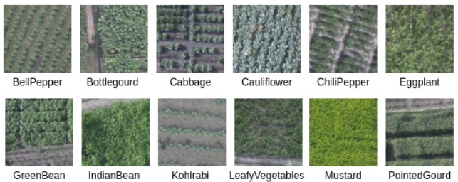
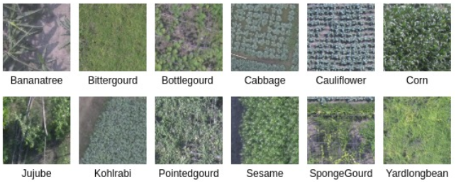
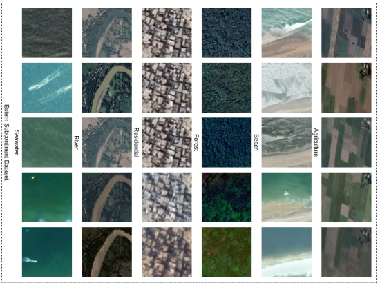
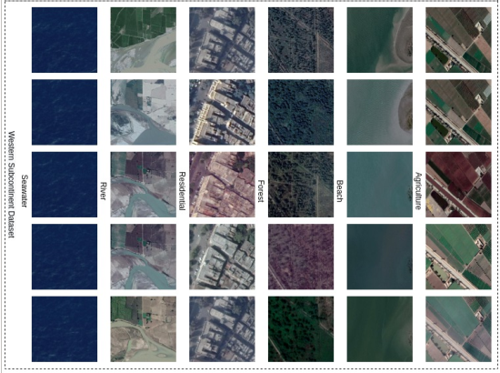

Asian subcontinent dataset (ASCD)
This dataset, known as ASCD, comprises multisensor data collected across various countries in the Asian subcontinent, specifically India, Bangladesh, and Sri Lanka. It encompasses 14 distinct land cover classes, with the image count per class ranging from 100 to 204. In total, there are 1674 images across these diverse classes. Each image has dimensions of 227 × 227 × 3. For access to the dataset, kindly send an email.
If you are using the dataset please cite the following articles
- Kalita, I., & Roy, M. (2020). Deep neural network-based heterogeneous domain adaptation using ensemble decision making in land cover classification. IEEE Transactions on Artificial Intelligence, 1(2), 167-180.
- Kalita, I., & Roy, M. (2022). Class-Wise Subspace Alignment-Based Unsupervised Adaptive Land Cover Classification in Scene-Level Using Deep Siamese Network. IEEE Transactions on Neural Networks and Learning Systems.

Kolkata agricultural region crop dataset (KARC)
The Kolkata agricultural region crop (KARC) dataset is a collection of three-channel (Red, Green, and Blue) remotely sensed aerial images acquired near the city of Kolkata (Bongaon), India. The images are acquired by flying the drone over the study area between August 2019 and December 2019. The dataset is a combination of 12 different types of crop classes. The number of images in each class ranges from 138 to 1196, and the total number of images (from 12 categories) is 5622.
If you are using the dataset please cite the following articles
- Kalita, I., Singh, G. P., & Roy, M. (2023). Crop classification using aerial images by analyzing an ensemble of DCNNs under multi-filter & multi-scale framework. Multimedia Tools and Applications, 82(12), 18409-18433.

Assam agricultural region crop dataset (AARC)
The Assam agricultural region crop (KARC) dataset is a collection of three-channel (Red, Green, and Blue) remotely sensed aerial images acquired from two locations (Bartari and Kharupetia) in the state of Assam, India. The images are acquired by flying the drone over the study areas between August 2019 and December 2019. The dataset consists of 12 different types of crops. The images in each class range between 178 and 545, while the total number of images is 3759.
If you are using the dataset please cite the following articles
- Kalita, I., Singh, G. P., & Roy, M. (2023). Crop classification using aerial images by analyzing an ensemble of DCNNs under multi-filter & multi-scale framework. Multimedia Tools and Applications, 82(12), 18409-18433.

Eastern sub-continent dataset (ESD)
The Eastern sub-continent dataset (ESD) is a combination of images collected over Eastern India and Bangladesh. Here, the images of size 300 × 300 × 3 are collected for six land cover classes like agriculture, forest, river, beach, residential area, and seawater. Each of the entries (images) corresponds to five temporal images taken at a different time-stamps (seasons) of a year (between 2016-18). The total number of survey sites in the ESD dataset is 981.
If you are using the dataset please cite the following articles
- Kalita, I., & Roy, M. (2022, July). Inception time DCNN for land cover classification by analyzing multi-temporal remotely sensed images. In IGARSS 2022-2022 IEEE International Geoscience and Remote Sensing Symposium (pp. 5736-5739). IEEE.

Western sub-continent dataset (WSD)
The images collected over Western India and Pakistan are grouped to generate the Western sub-continent dataset (WSD). The dataset is a combination of six land cover classes as agriculture, forest, river, beach, residential area, and seawater. The collected images are of size 300 × 300 × 3, and it is collected throughout five different times-stamps (seasons) of a year (between 2016-18). The total number of survey sites in the WSD dataset is 1215.
If you are using the dataset please cite the following articles
- Kalita, I., & Roy, M. (2022, July). Inception time DCNN for land cover classification by analyzing multi-temporal remotely sensed images. In IGARSS 2022-2022 IEEE International Geoscience and Remote Sensing Symposium (pp. 5736-5739). IEEE.